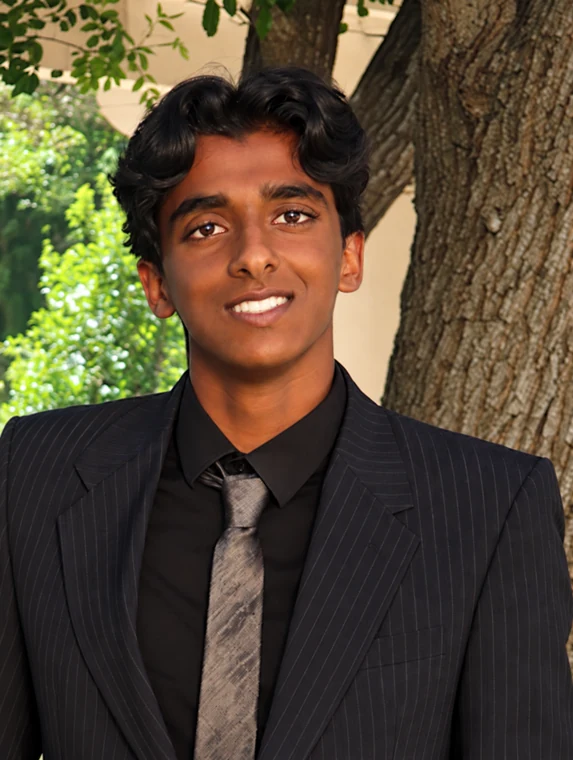
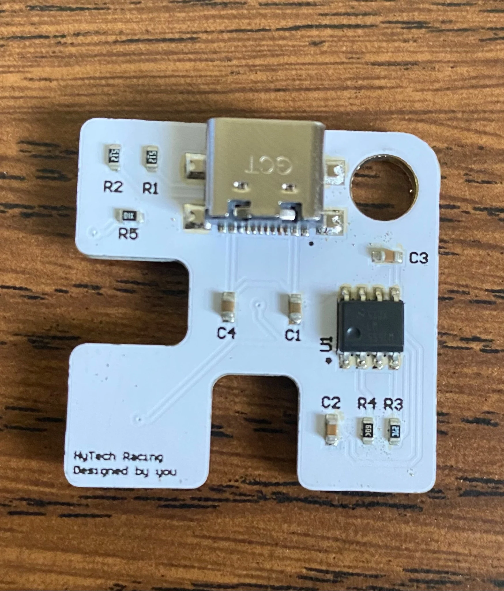
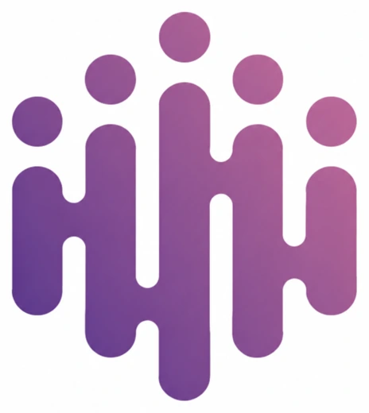
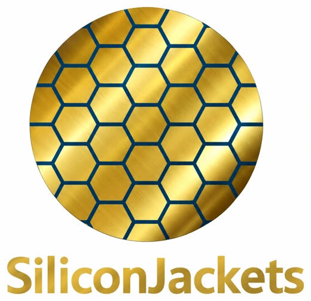
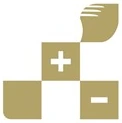

Expected Dec 2028
B.S. Electrical Engineering
Georgia Institute of Technology
- Concentrating on circuit technology and signal and information processing, with hands-on work in analog IC design, PCB design, and embedded systems.
Seeking Summer 2027 internship and co-op roles
I'm Ash, a Georgia Tech Electrical Engineering student. From transistor-level circuits to full-scale systems, I build things, measure what happens, and figure out why. This page is a board: scroll to power it, probe a part to read its measurement.
Download resumeEmail meLinkedIn
MHz
Illustrative waveform.

My Story
My interest in engineering started with programming and robotics, where code could turn an idea into something tangible. As I worked on real systems, I became increasingly interested in everything underneath the software: the electrical signals, physical components, timing constraints, and tradeoffs that determine whether hardware behaves the way we expect.
I'm now studying electrical engineering at the Georgia Institute of Technology, where my interests are centered around circuit technology and signal processing. I am also drawn to analog and mixed-signal design since it's the point where transistor behavior, circuit architecture, simulation, and physical layout all meet. I enjoy the precision it demands, along with the constant opportunity to learn from unexpected results.
That curiosity extends beyond integrated circuits. During a medical-device engineering internship, I validated switching and sensing circuits, programmed embedded interfaces, and automated a lengthy oscilloscope test sequence. Through SiliconJackets and HyTech Racing, I have explored chip design, PCB layout, and embedded firmware.
Outside individual technical work, I've enjoyed leading and mentoring programmers on a FIRST Robotics team. Helping a teammate go from being uncertain about a codebase to independently implementing a feature changed how I think about collaboration. I want to keep becoming the kind of engineer who can contribute deeply to technical work while making the people around me stronger.
Each part is a project. Hover or tap one to probe its key measurement, and open it for the full case study.

Expected Dec 2028
Georgia Institute of Technology
Jun to Aug 2026

huMannity Medtec, Santa Clarita, CA
Aug 2026 to present

SiliconJackets, Georgia Tech
Aug 2026 to present

HyTech Racing, Georgia Tech
PCB design and layout, schematic capture, circuit design and analysis, analog and digital circuits, board bring-up, hardware validation, root-cause analysis, signal integrity, embedded systems, MCU programming, CMOS design, DRC/LVS, soldering
Altium Designer, Cadence Virtuoso, Cadence Pegasus, LTspice, MATLAB, Simplicity Studio, Git, GitHub CI, oscilloscope, function generator, DC power supply, digital multimeter, differential probe
Python, C++, C, Java, HTML, CSS, I²C, SPI, UART, CAN, USB-C
My long-term goal is to lead the development of advanced electronic hardware, with a particular interest in analog and mixed-signal integrated circuits, semiconductor devices, and board-level design. I want to work on products where circuit-level decisions affect system-level performance, and build enough breadth to collaborate across design, verification, layout, and testing.
I'm still exploring the exact roles that fit best. Rather than treating that uncertainty as a problem, I see it as a reason to pursue projects and work experiences that make the options tangible. Each test point below is a checkpoint on the route from where I am to the engineer I want to become.
Build fluency in circuit analysis, signal processing, differential equations, device behavior, and electronics. Keep using MATLAB, Python, and lab instruments to connect mathematical models to measured behavior. Seek feedback from classes, technical clubs, and design reviews.
Develop more complex analog and mixed-signal blocks, strengthen Cadence simulation and layout skills, and pursue opportunities to understand power, noise, timing, and process variation. Continue taking PCB and embedded projects from design through test, not stopping at the schematic.
Pursue internships and co-op experiences in circuit design, semiconductor engineering, hardware development, or test engineering. My priorities are strong technical mentorship, ownership of real design problems, and opportunities to see how engineering decisions are made in industry.
Grow into an engineer who can reason from device physics and signal behavior up through hardware architecture and implementation. I hope to take on increasing design responsibility, lead entire teams, and mentor newer engineers just as others have helped me grow.
View my resume here, open it in a new tab, or download a copy.
Open to Summer 2027 roles
I'm always interested in learning from engineers, connecting with technical teams, and hearing about opportunities in hardware and semiconductor design. If a project or experience here caught your attention, I'd be glad to talk about it.
Email is the fastest way to reach me.